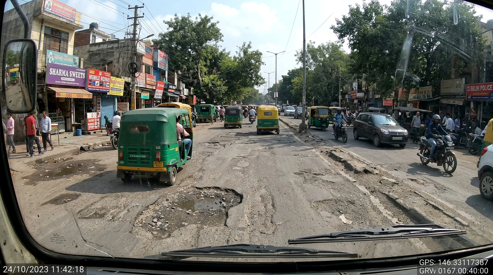
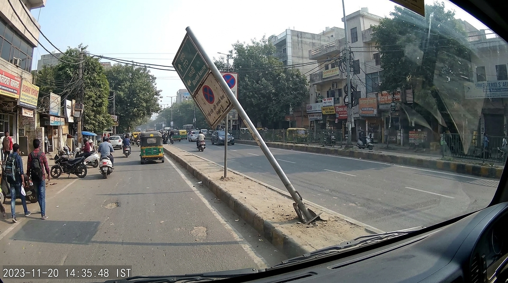
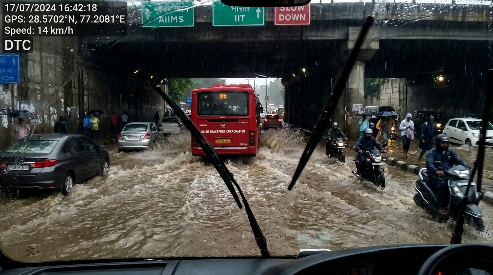

48
Active DTC Buses
1,420
OSM Road Segments
14
Critical Hazards
27
MCD 311 Tickets
92.4%
Fusion Confidence
LIVE DETECTIONS
Live
Live Bus Feeds
View All
BUS 402 • FRONT CAMERA
REC

BUS 119 • SIDE ANGLE
REC

BUS 880 • FRONT UNDERPASS
REC

BUS 221 • REAR ANPR
REC
DL 4C AB 1234
HSRP VERIFIED • 96% MATCH
BEL EQUINOX Integrated
7 new MCD 311 tickets auto-generated
Rain alert: High waterlogging risk in Central Delhi
Fleet uptime: 98.2%
Last data sync: 21:07:32
AI for Safer, Smarter India 🇮🇳